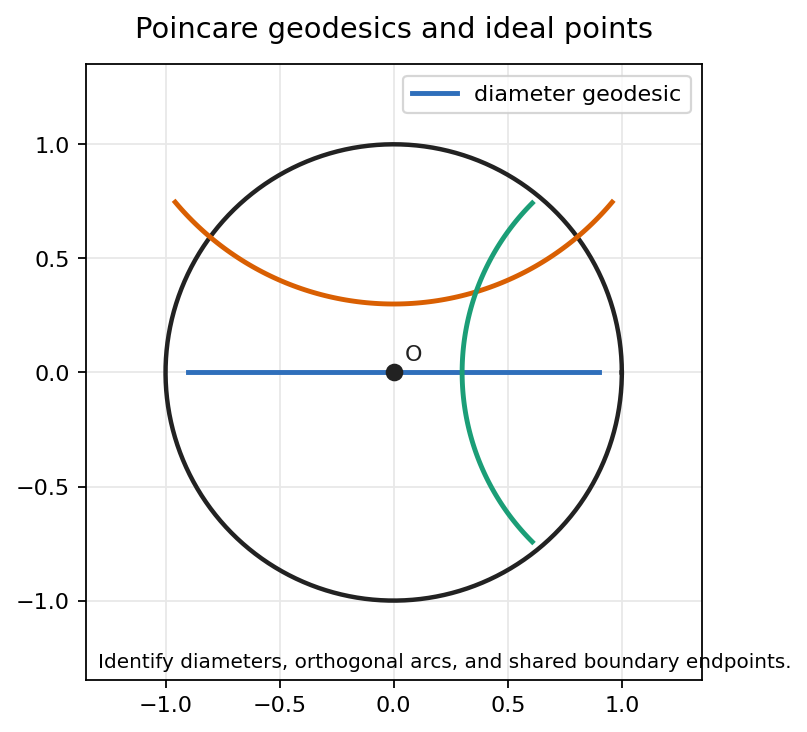
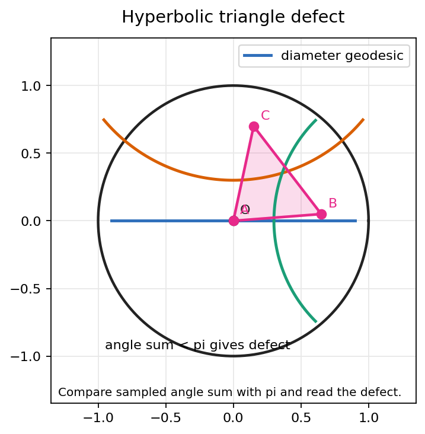
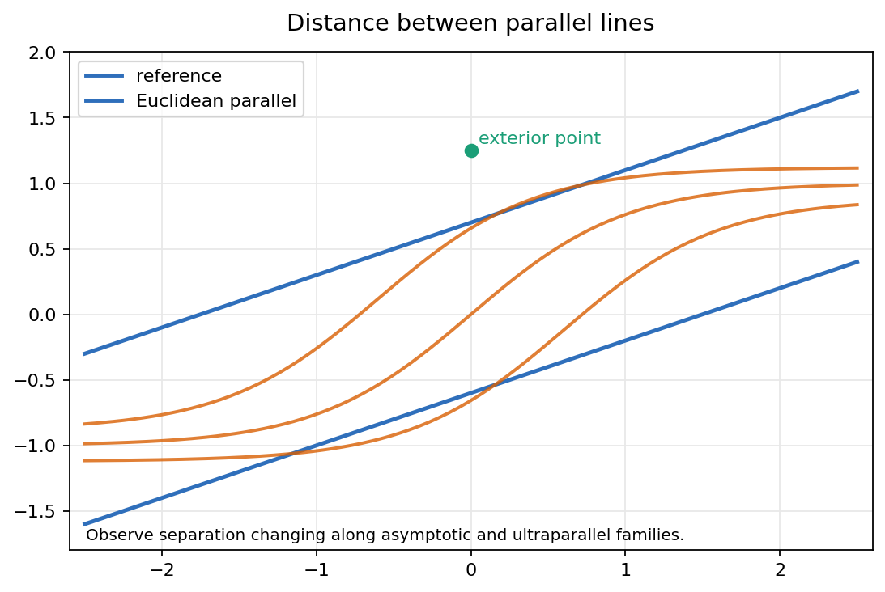
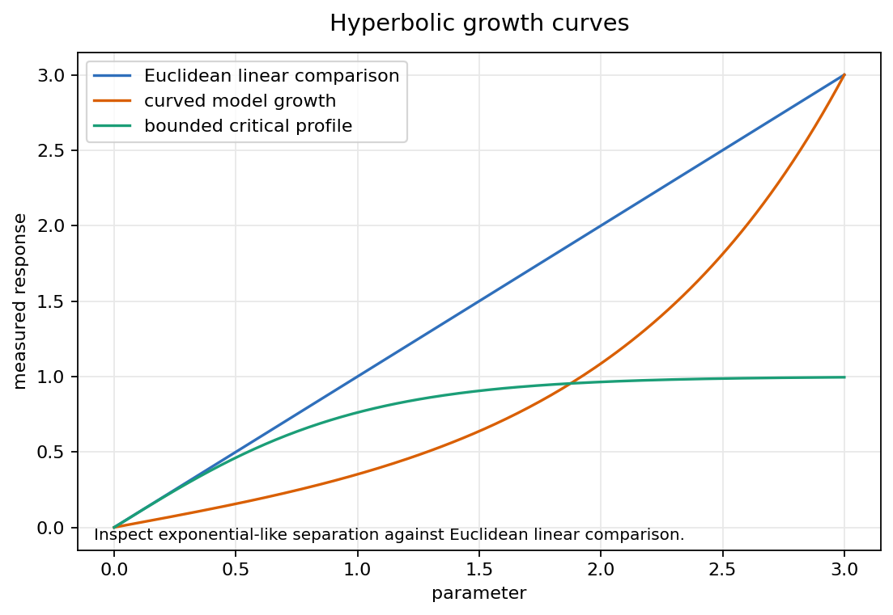

Many parallels, triangle defect, and changing distance in a metric model.
Geometry: A Metric Approach with Models
Source span: printed pages 196-223; PDF pages 211-238.
The notebook's question: How does the hyperbolic model make many parallels, angle defect, and exponential separation visible?

Its endpoints on the boundary are ideal endpoints. They organize limiting behavior but are not points of the hyperbolic plane.
The limiting lines point toward the ideal endpoints of \(L\); the remaining non-meeting lines form a whole interval of directions.

In the hyperbolic plane, \(D(T)>0\). In curvature \(-1\), area and defect agree.
| Inspection | Hyperbolic Reading |
|---|---|
| Vertex stays central | Angle sum is below \(\pi\), but the defect can be modest. |
| Vertex approaches boundary | Boundary distance grows without bound and the angle at that vertex shrinks. |
| All vertices ideal | Angles tend to zero, so \(D(T)\to\pi\) in curvature \(-1\). |


For small \(r\), these resemble Euclidean formulas. For large \(r\), the exponential terms dominate.
| Temptation | Correct Hyperbolic Test |
|---|---|
| The boundary circle is part of the plane. | No. Boundary points are ideal directions, not ordinary points. |
| A curved arc cannot be a line. | It is a line when it meets the boundary orthogonally. |
| Parallel distance should be constant. | Only Euclidean parallel strips behave that way. |
| A bounded drawing means bounded geometry. | The metric factor sends the boundary infinitely far away. |